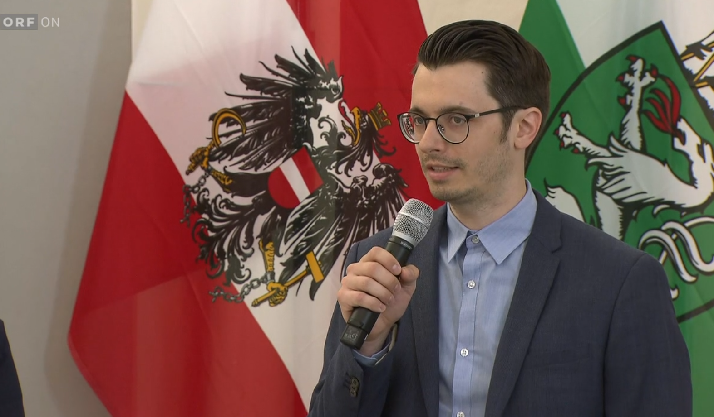

Kommunikation
Presse, Sprache & öffentliche Kommunikation
Medienanfragen, Presseinformationen und öffentliche Auftritte verlangen sprachliche Präzision, rasche Auffassung und einen kühlen Kopf – gerade dann, wenn die Lage unübersichtlich wird.